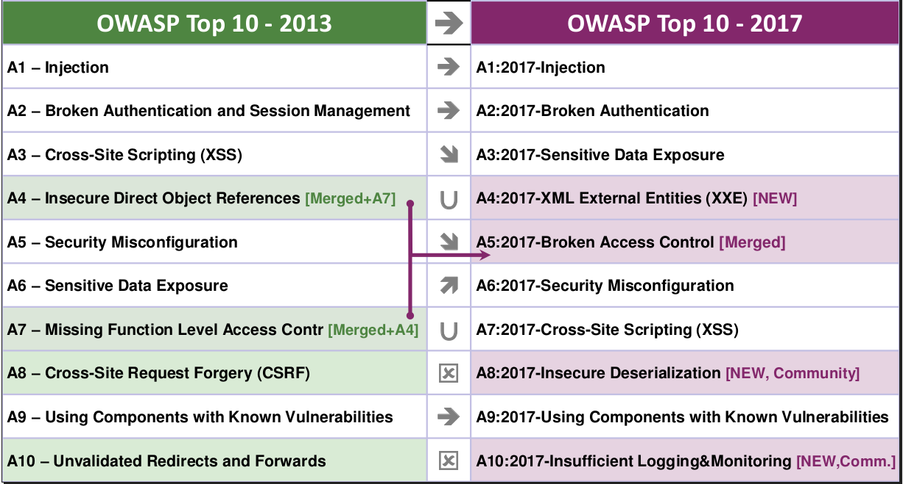
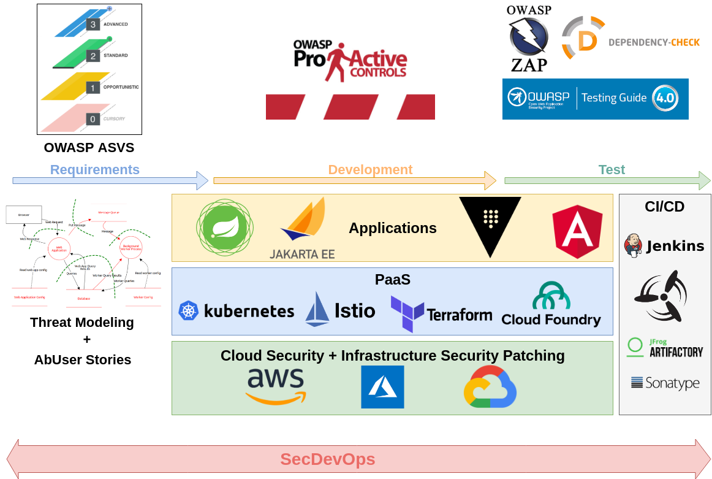

Agil aber sicher!
https://andifalk.github.io/
agil-aber-sicher-heise-devsec-2018/presentation/index.html

Andreas Falk
Novatec Consulting GmbH
andreas.falk@novatec-gmbh.de / @andifalk (Twitter)https://www.novatec-gmbh.de/beratung/agile-security
Unsere Software ist doch sicher ?
Quelle: heise.de
State of Software Security Report 2017
(Veracode)
Quelle: veracode.com
Security ist nicht mein Job !?
EU Datenschutz Grundverordnung
Seit Mai 2018 geltendes Recht!

Quelle: GDPR’s Missing Link Report (senzing.com/gdpr)
ISO 27034
Neuer Standard für Anwendungssicherheit
Nutzerverhalten
Quelle: Deutschland sicher im Netz (DsiN): Sicherheitsindex 2018
1 Security-Professional für 100 Entwickler
Quelle: sonatype.com/devops-survey-report
Sicherheit
Im Projektalltag
Wir haben doch keine Zeit

Hacker finden uns nicht !

Quelle: shodan.io
Wir haben doch eine Firewall!
Niemals dem internen Netzwerk blind vertrauen!
Pen-Test kurz vor “Going Live”
“Wir testen die Sicherheit in die Software hinein”

Weiter so ?

Was nun ?

Technology Stacks
Soll das alles nun
der Entwickler machen?

Rotate, Repair, Repave
“What if every server inside my data center had a maximum lifetime of two hours? This approach would frustrate malware writers...”Justin Smith (Chief Security Officer at Pivotal)
Rotate, Repair, Repave (https://thenewstack.io/cloud-foundrys-approach-security-rotate-repair-repave)Vertrauliche Daten
Azure Key Vault
AWS Secrets Manager
Google Cloud HSM
CloudFoundry CredHub
Hashicorp Vault
Sichere Frameworks und Tools

Mehr Transparenz
https://spring.io/blog/2018/10/16/spring-project-vulnerability-reports-published
Agile Praktiken (Scrum, Kanban, XP)
Architektur, Programmiersprachen, Patterns
Unit-, Integration-, E2E-Testing, Monitoring
Authentifizierung, Authz, SQL Injections, XSS, ...
Secret Management, Datenschutz, Verschlüsselung
Absicherung der CI/CD-Pipeline
Keine Credentials in VCS (Git, SVN, ...)
Credentials in Jenkins, Concourse,... sicher ablegen
Jenkins & Co regelmäßig aktualisieren
Test Code ist kein 2.Klasse Code

SecDevOps
DevSecOps
DevOpsSec
“Shift Left”
Es geht nur gemeinsam
Security Officer/Champion
sichere Entwicklungs-prozesse ?

Scrum Guide
“Das Entwicklungsteam besteht aus Profis, die am Ende eines jeden Sprints ein fertiges (Done) Inkrement übergeben, welchespotenziell auslieferbar ist. ”
Quelle: www.scrumguides.org
Potentiell unsicher ausliefern ?
Ausgangslage: Security != Agil!
Security in Scrum
Security Officer/Champion

Security Trainings

- Sicherheits-Risiken
- Datenschutz-Risiken
- Threat Modeling
- AbUser Stories (Evil Stories)
Threat Modeling ist auch Agil

AbUser Stories
Security Trainings

- Threat Modeling
- Secure Design Patterns
- Security Code Reviews
- Security Testing
- Security Dojos
Open Web Application Security Project
OWASP Top Projekte
OWASP Top 10
Application Security Verification Standard
Pro Active Controls
Security DoJo's
Juice Shop
Slack Security Champions
- Threat Model Refinement
- AbUser Stories erstellen
- Security Features mit hoher Prio
- Akzeptanzkriterien für Sicherheit

- Detaillierung Threat Model
- Akzeptanzkriterien für Sicherheit
- Security Patterns diskutieren
- Security Testfälle

- Secure Design / Coding
- Pairing mit Security-Officer/Champion
- Security-Aware DoD
- Security Code Reviews
- Security Testing
Entwickler Security Tests
Bevor ein Angreifer “testet”
CI/CD Pipelines
Continuous Delivery/Deployment ermöglicht
schnelle Reaktion mit Security-Fixes
CI Commit-Stage mit statischer Analyse (SAST)
CI Security-Stage mit dynamischer Analyse (DAST)

- Transparenz der Security gegenüber Stakeholdern
- Inspect & Adapt aller Security-Aktivitäten
Idealzustand: Security == Agil!
The Big Picture
Book References


Q&A
https://www.novatec-gmbh.de/beratung/agile-security https://blog.novatec-gmbh.deandreas.falk@novatec-gmbh.de
@andifalk
IT-Tage 2018 (Frankfurt)
12.12.2018
Continuous Delivery-Pipelines mit Concourse CI
Online References
- Shodan.io
- Verzeichnis der ISO 27034 Teile
- Deutschland sicher im Netz (DsiN): Sicherheitsindex 2018
- OWASP Top 10 2017 (https://github.com/OWASP/Top10)
- Application Security Verification Standard (https://github.com/OWASP/ASVS)
- Pro Active Controls (https://www.owasp.org/index.php/OWASP_Proactive_Controls)
- https://docs.microsoft.com/de-de/azure/security/azure-security-threat-modeling-tool
- https://github.com/bkimminich/juice-shop
- Rotate, Repair, Repave (https://thenewstack.io/cloud-foundrys-approach-security-rotate-repair-repave)
All images used are from Pixabay and are published under Creative Commons CC0 license.
All used logos are trademarks of respective companies